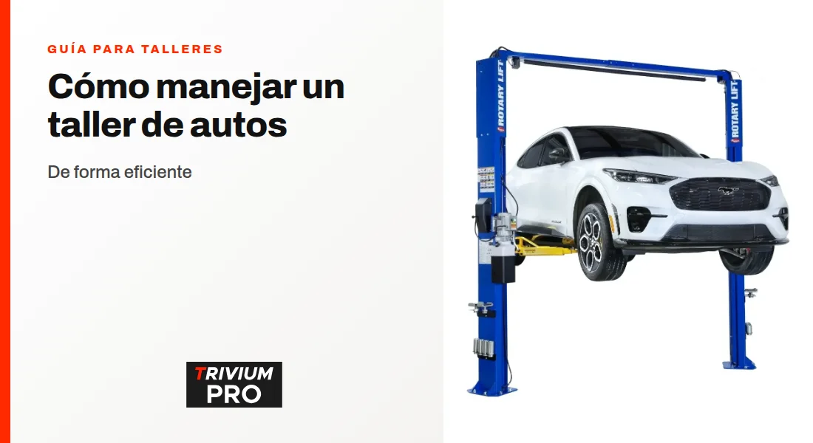

Manejar un taller de autos no es tarea fácil, pero con una buena organización, un enfoque en la calidad del servicio y una atención adecuada a los detalles, se puede garantizar éxito y rentabilidad. En este artículo, exploraremos los aspectos clave que debes considerar para llevar adelante un taller automotriz de manera eficiente.
1. Diseña un Plan de Negocios Claro
Antes de empezar, es fundamental tener un plan de negocios que defina:
- Los servicios que ofrecerás (mecánica general, alineación, balanceo, electricidad, etc.).
- El público objetivo (particulares, flotas de empresas, etc.).
- Los costos operativos y los ingresos proyectados.
- Una estrategia de marketing para captar clientes.
Un plan bien estructurado te permitirá establecer objetivos claros y medir tu progreso.
2. Invierte en Equipos de Calidad
Contar con herramientas y maquinaria confiables es esencial para garantizar un trabajo eficiente. Algunos de los equipos clave incluyen:
- Elevadores de autos.
- Desarmarmadoras, alineadoras y balanceadoras.
- Herramientas neumáticas y eléctricas.
- Equipos de diagnóstico.
Opta por marcas reconocidas que brinden soporte técnico y garantía. La inversión inicial en maquinaria de calidad se traduce en menos averías y mayor productividad.
3. Capacita a tu Personal
El personal es el alma del taller. Invierte en capacitación constante para que los técnicos estén al día con las últimas tecnologías y técnicas. Esto no solo mejorará la calidad del trabajo, sino que también aumentará la satisfacción del cliente.
4. Organiza el Espacio de Trabajo
Un taller ordenado y limpio no solo mejora la eficiencia, sino que también transmite profesionalismo. Algunos consejos:
- Asigna áreas específicas para cada tipo de trabajo.
- Almacena las herramientas y piezas de manera organizada.
- Mantén un inventario actualizado para evitar faltantes.
5. Ofrece un Excelente Servicio al Cliente
Un cliente satisfecho es la mejor publicidad. Asegúrate de:
- Brindar diagnósticos claros y honestos.
- Cumplir con los tiempos de entrega prometidos.
- Mantener una comunicación fluida durante todo el proceso.
También puedes implementar encuestas de satisfacción para identificar áreas de mejora.
6. Implementa Tecnología en tu Gestión
Usar software de gestión de talleres te ayudará a automatizar tareas como:
- Registro de clientes y vehículos.
- Seguimiento de reparaciones y mantenimientos.
- Gestión de inventarios y pedidos.
- Facturación y control financiero.
Estas herramientas simplifican la administración y te permiten enfocarte en mejorar el servicio.
7. Promueve Tu Taller
Un buen servicio debe ir acompañado de una buena estrategia de marketing. Algunas ideas:
- Crear un perfil de negocio en Google Maps.
- Publicar contenido relevante en redes sociales.
- Ofrecer promociones para clientes nuevos.
- Fomentar el boca a boca con un programa de referidos.
8. Monitorea el Rendimiento
Por último, mide regularmente los resultados de tu taller. Analiza indicadores como:
- Número de clientes atendidos.
- Tasa de retorno de clientes.
- Rentabilidad de los servicios.
Estos datos te ayudarán a identificar áreas de mejora y a tomar decisiones informadas.
Conclusión
Manejar un taller de autos requiere esfuerzo y dedicación, pero siguiendo estos consejos podrás optimizar tus operaciones, mejorar la experiencia del cliente y asegurar el crecimiento de tu negocio. Recuerda que la clave está en combinar buen servicio, tecnología y un equipo capacitado. ¡Tu taller puede marcar la diferencia!